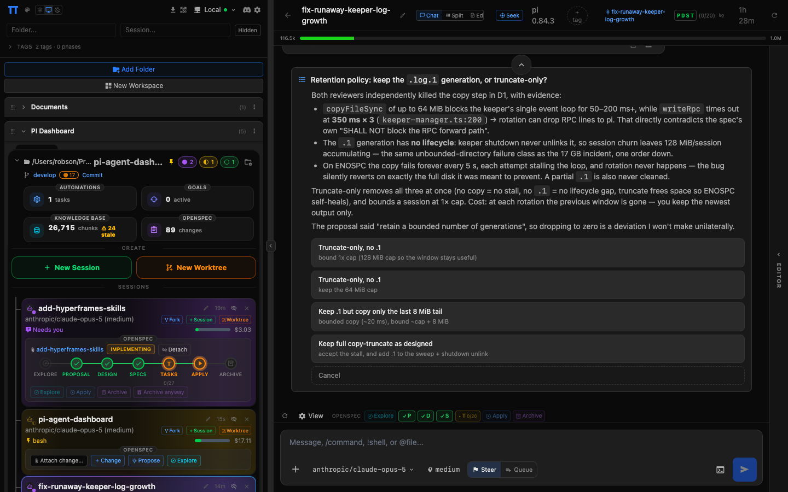
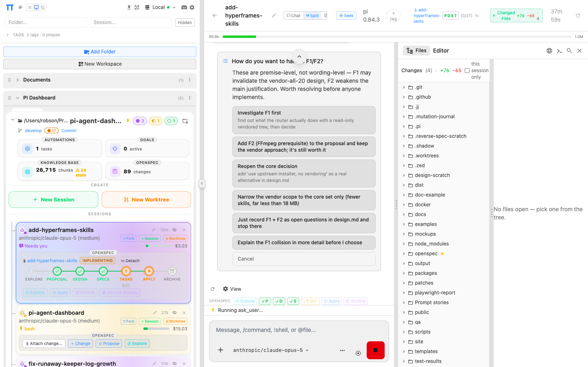

Open source · self hosted
Your coding agents,
visible from anywhere.
Every pi session, mirrored to the browser as it runs.

01
Every session, in one place
grouped by folder

02
It asks. You answer, from anywhere.
the run waits for you

03
Editor, files and diff, in the page
split view

04
Dark or light. Desktop or phone.
EN · 简体中文
Start it next to the agent you already run
PI Dashboard
$ npm i -g pi-dashboard
PI Dashboard